Usage
API
Import the sc-tools API as follows:
import sc_toolbox.api as sct
You can then access the respective modules like:
sct.plot.cool_fancy_plot()
Plots
- class sc_toolbox.api.plot.Colormaps(value)[source]
- Available colormaps:
- grey_redgrey_bluegrey_greengray_yellowgrey_violet
- sc_toolbox.api.plot.annotated_cell_type_umap(adata, primary_color, cell_type_color, legend_loc='on data', legend_fontsize=8, title='Plot title', palette=None, cmap=None, figsize=(8, 6), save=None)[source]
Plots a UMAP which is colored by the primary_color, but also draws all labels on top of all clusters.
- Parameters
adata – AnnData object
primary_color (Union[str, Sequence[str]]) – Primary color to color all cells by, e.g. ‘genotype’
cell_type_color (str) – Key containing all cell types, e.g. ‘cell_type’
legend_loc (str) – Location of the legend (default: ‘on data’)
legend_fontsize (int) – Font size of the legend (default: 8)
title (str) – Title of the plot
palette – Color
cmap – Color map of the UMAP
figsize – Size of the figure
save – Path to save the plot to
- Returns
fig and axs Matplotlib objects
Example
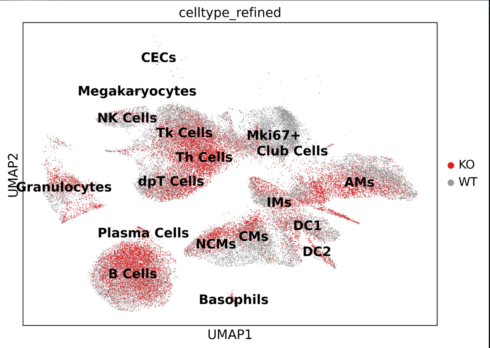
- sc_toolbox.api.plot.average_expression(gene_expression, genes, order, id_label='identifier', xlabel='days', cluster='all', hue=None, cols='tab:blue', figsize=(15, 6), smooth=None, rotation=None, order_smooth=None, conf_int=None, scatter=None, save=None)[source]
Draw a line plot showing the gene expression over time. Expression values are averaged by individual sample.
- Parameters
gene_expression – Data frame containing gene expression values
genes – List of genes for which individual line plots will be generated
order (List[str]) – Order of x-axis labels from left to right
id_label (str) – Adata column in which sample id information is stored
xlabel (str) – x-axis label
cluster (str) – Which clusters to plot. Select ‘all” if all clusters should be drawn.
hue – Which value to color by
figsize (Tuple[int, int]) – Size of the figure as specified in matplotlib
smooth – Set to true for smoothened line plot using polynomial regression
rotation (Optional[int]) – set to True to rotate x-axis labels 90 degrees
order_smooth – If greater than 1, use numpy.polyfit to estimate a polynomial regression
conf_int – Size of the confidence interval for the regression estimate
scatter – Set to True to add average expression values per sample ID as dots
save (Optional[str]) – Path to save the plot to
cols (str) –
- Example smooth:
- 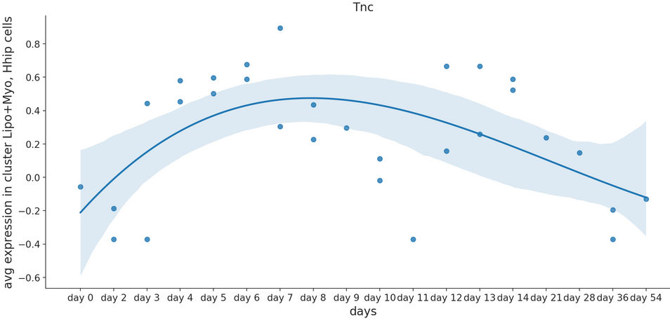
- Example raw:
- 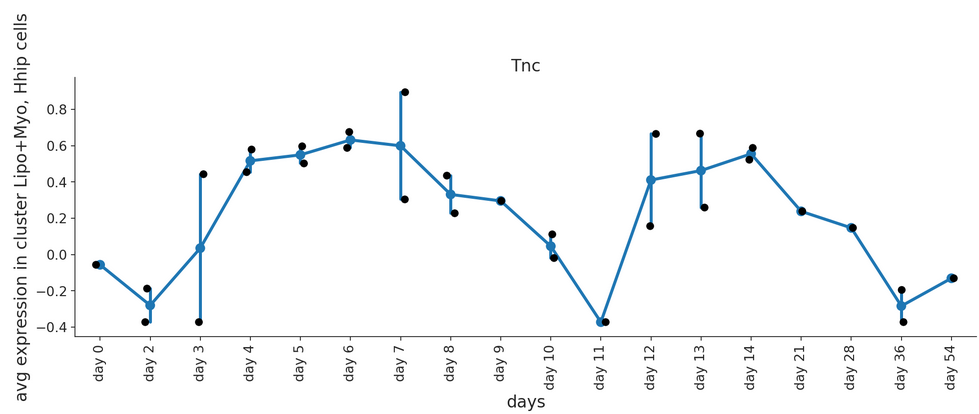
- sc_toolbox.api.plot.average_expression_per_cell(gene_expression, genes, order, xlabel='days', cluster='all', hue=None, figsize=(15, 6), smooth=None, rotation=None, tick_size=12, label_size=15, order_smooth=None, conf_int=None, scatter=None, cols=None, save=None)[source]
Plots the average gene expression as a line plot per cell. Ideally used when the scatter point should not be sample wise, but cell wise. :param gene_expression: Data frame containing gene expression values :param genes: List of genes for which individual line plots will be generated :param order: Order of x-axis labels from left to right :param xlabel: x-axis label :param cluster: Which clusters to plot. Select ‘all” if all clusters should be drawn. :param hue: Split expression values by this grouping, one line per category, will be drawn :param figsize: Size of the figure as specified in matplotlib :param smooth: Set to true for smoothened line plot using polynomial regression :param rotation: Set to True to rotate x-axis labels 90 degrees :param tick_size: Size of the ticks as specified in matplotlib :param label_size: Size of the labels as specified in matplotlib :param order_smooth: If greater than 1, use numpy.polyfit to estimate a polynomial regression :param conf_int: Size of the confidence interval for the regression estimate :param scatter: Set to True to add average expression values per sample ID as dots :param cols: List of colors to use for line plot :param save: Path to save the plot to
- Parameters
xlabel (str) –
cluster (str) –
figsize (Tuple[int, int]) –
save (Optional[str]) –
- sc_toolbox.api.plot.average_expression_per_cluster(gene_expression, genes, order, obs=None, id_label='identifier', xlabel='days', cluster='all', hue=None, figsize=(15, 6), smooth=None, rotation=None, tick_size=12, label_size=15, order_smooth=None, conf_int=None, scatter=None, save=None)[source]
Plots gene expression over time split by cluster identity. One line per cluster.
- Parameters
gene_expression – Data frame containing gene expression values
genes – List of genes for which individual line plots will be generated
order – Order of x-axis labels from left to right
obs – Data frame containing meta data information
xlabel (str) – x-axis label
cluster (str) – Which clusters to plot. Select ‘all” if all clusters should be drawn.
id_label (str) – Meta data column in which sample id information is stored
hue – Split expression values by this grouping, one line per category will be drawn
figsize (Tuple[int, int]) – Size of the figure as specified in matplotlib
smooth – Set to True for smoothened line plot using polynomial regression
rotation – Set to True to rotate x-axis labels 90 degrees
tick_size (int) – Size of the ticks as specified in matplotlib
label_size (int) – Size of the labels as specified in matplotlib
order_smooth – If greater than 1, use numpy.polyfit to estimate a polynomial regression
conf_int – Size of the confidence interval for the regression estimate
scatter – Set to True to add average expression values per sample ID as dots
save (Optional[str]) – Path to save the plot to
- sc_toolbox.api.plot.average_expression_split_cluster(gene_expression, genes, order, id_label='identifier', xlabel='days', hue='genotype', cluster=None, figsize=(15, 6), smooth=None, rotation=None, cols=None, tick_size=12, label_size=15, order_smooth=None, conf_int=None, scatter=None, save=None)[source]
Plot average gene expression as line plots for multiple clusters at once.
- Parameters
gene_expression – Data frame containing gene expression values
genes – List of genes for which individual line plots will be generated
order – Order of x-axis labels from left to right
id_label – Meta data column in which sample id information is stored
xlabel – x-axis label
hue – Split expression values by this grouping, one line per category, will be drawn
cluster – Which clusters to plot. Select ‘all” if all clusters should be drawn.
figsize – Size of the figure as specified in matplotlib
smooth – Set to True for smoothened line plot using polynomial regression
rotation – x-axis label rotation
cols – List of colors to use for line plot
tick_size – Size of the ticks as specified in matplotlib
label_size – Size of the labels as specified in matplotlib
order_smooth – If greater than 1, numpy.polyfit is used to estimate a polynomial regression
conf_int – Size of the confidence interval for the regression estimate
scatter – Set to True to add average expression values per sample ID as dots
save – Path to save the plot to
- Example smooth:
- 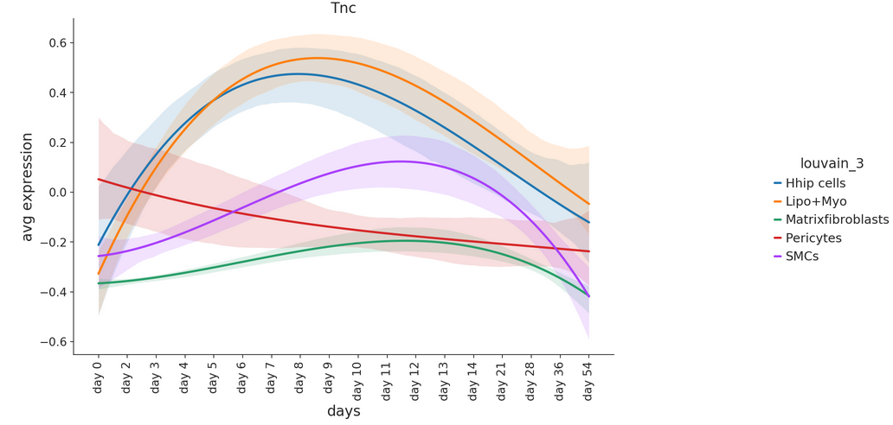
- Example raw:
- 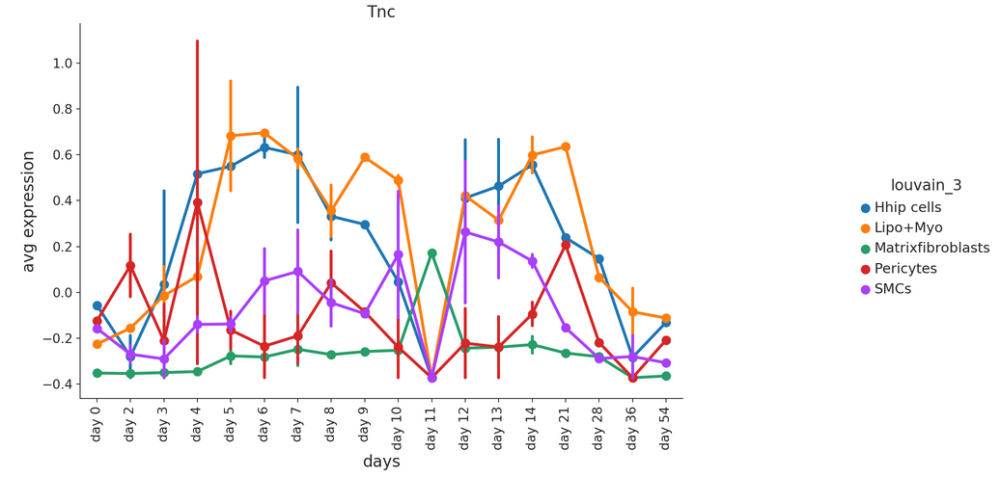
- sc_toolbox.api.plot.cluster_composition_stacked_barplot(relative_frequencies, xlabel='name', figsize=(6, 10), width=0.8, order=None, error_bar=None, label_size=15, tick_size=13, capsize=None, margins=(0.02, 0.04), colors=None, save=None)[source]
Plot relative frequencies as a stacked barplot.
- Parameters
relative_frequencies (pandas.core.frame.DataFrame) – Data frame containing relative Frequencies as calculated by calc_relFreq()
xlabel (str) – x-axis label
figsize (Tuple[int, int]) – Size of the figure as specified in matplotlib
width (float) – Width of the bars
order – Order of x-axis labels from left to right
error_bar – Set to True to add error bars (only possible when grouping the frequencies)
tick_size (int) – Size of the ticks as specified in matplotlib
label_size (int) – Size of the labels as specified in matplotlib
capsize (Optional[int]) – Size of the horizontal lines of the error bar
margins (Tuple[float, float]) – Change margins of the plot if desired
colors – List of colors to use for the bands
save (Optional[str]) – Path to save the plot to
Example
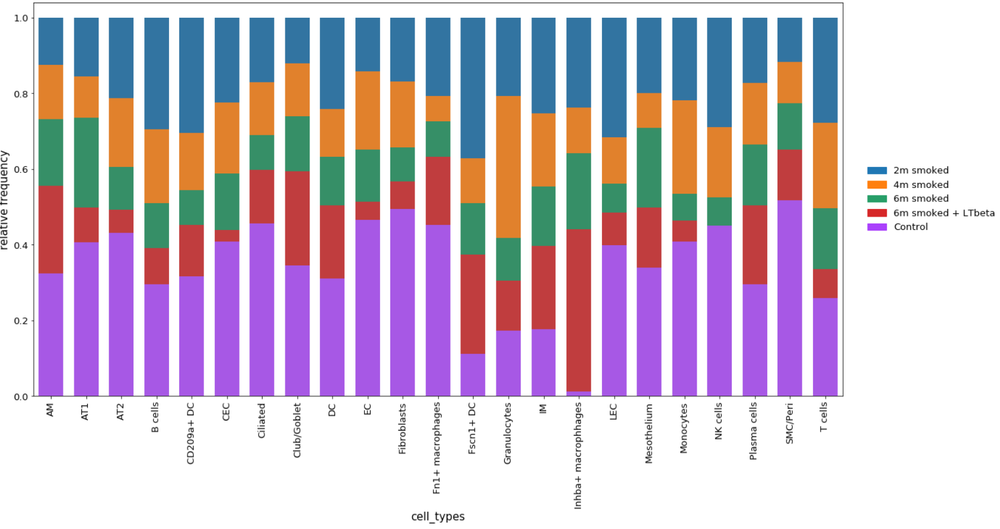
- sc_toolbox.api.plot.colors_overview(colors, ncols=2, figsize=(8, 5), save=None)[source]
Draw an overview plot of all used colors
- Parameters
colors (Dict) – Dictionary of color name and color
ncols (int) – How many columns for the plot
figsize (Tuple[int, int]) – Size of the figure as specified in matplotlib
save (Optional[str]) – Path to save the plot to
Example
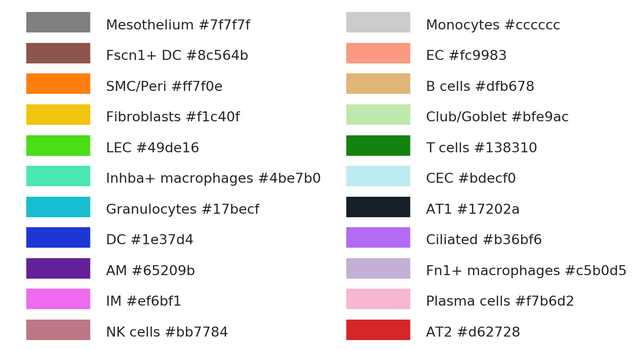
- sc_toolbox.api.plot.custom_plot_size(width, height, dpi)[source]
Create a custom axis object of desired sizes.
- Parameters
width (int) – Desired plot width
height (int) – Desired plot height
dpi (int) – Desired plot DPI.
Returns: Axis of desired sizes
- sc_toolbox.api.plot.gene_boxplot(table, palette, xlabel='cell_types', hue=None, figsize=(10, 5), legend=True, score='Axin2', scatter=None, rotate=False, width=0.7, save=None)[source]
Plot gene values as split boxplots
- Parameters
table – Pandas DataFrame
palette (List[str]) –
xlabel (str) – x-axis label
hue (Optional[str]) –
figsize (Tuple[int, int]) – Size of the figure as specified in matplotlib
legend – Whether to draw a legend or not
score –
scatter –
rotate –
width – Width of the desired plot
save – Path to save the plot to
Example
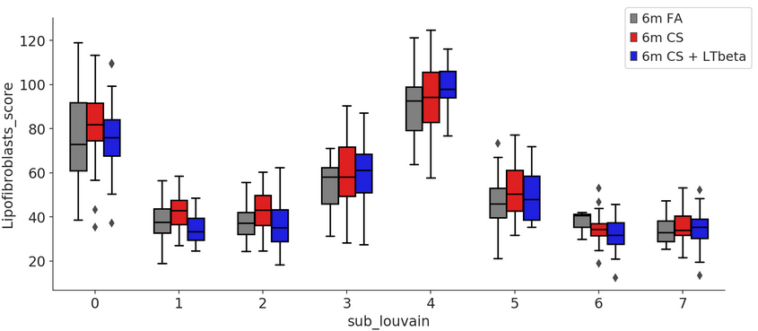
- sc_toolbox.api.plot.gene_expression_dpt_ordered(data, genes, xlabel, order=3, conf_int=95, figsize=(12, 6), condition=None, label_size=15, cols=None, scale=None, ylim=None, save=None)[source]
Plot smoothed expression of all cells ordered by pseudo time.
- Parameters
data – AnnData object
genes – List of genes for which individual line plots will be generated
xlabel – x-axis label
order – Order of x-axis labels from left to right
conf_int – Size of the confidence interval for the regression estimate
figsize (Tuple[int, int]) – Size of the figure as specified in matplotlib
condition – Split expression values by this grouping, one line per category will be drawn
label_size (int) – Size of the labels as specified in matplotlib
cols – List of colors to use for line plot
scale – Set to True to scale expression value to a range between 0 and 1
ylim – Upper limit on the y-axis if desired
save (Optional[str]) – Path to save the plot to
Example
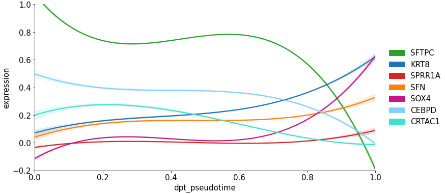- Example with columns:
- 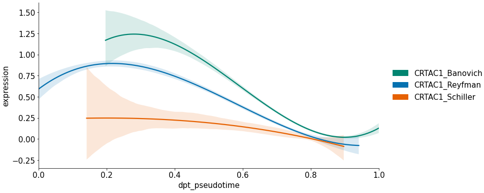
- sc_toolbox.api.plot.genotype_vs_genotype_umaps(adata, genotype_key, genotype_label_1, genotype_label_2, color, hide_one_legend=True, figsize=(12, 6))[source]
Plots a two UMAPs of genotypes next to each other displaying only the colors of the
- Parameters
adata – AnnData object
genotype_key (str) – Key of the genotypes
genotype_label_1 (str) – Name of the first genotype; Must be contained in the genotypes
genotype_label_2 (str) – Name of the second genotype; Must be contained in the genotypes
color (str) – Key to color by
hide_one_legend (bool) – Whether to hide the legend of the genotype_label_1
figsize (Tuple[int, int]) – Size of the figure
Example
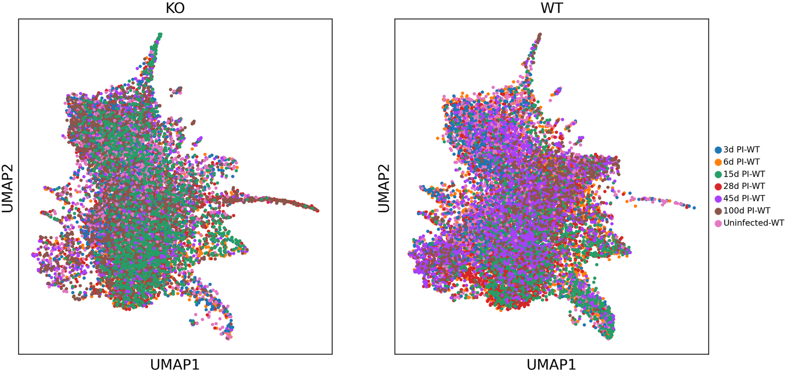
- sc_toolbox.api.plot.marker_dendrogram(marker_table, threshold=0.7, column='cluster', log_fc_key='log_FC', label_size=10, orientation='top', figsize=(10, 4), save=None)[source]
Plots a dendogram of used marker genes.
- Parameters
marker_table (pandas.core.frame.DataFrame) – A marker table as generated by sct.calc.extended_marker_table
threshold (float) – Threshold for the log fold change
column (str) – Column to create pivot by; usually just the clusters
log_fc_key (str) – Key for the stored log fold changes in the marker table
label_size (int) – Font size of the labels
orientation (str) – Orientation of the figure; Currently just ‘top’ or no orientation
figsize (Tuple[int, int]) – Size of the figure as specified in matplotlib
save (Optional[str]) – Path to save the plot to
Example

- sc_toolbox.api.plot.relative_frequencies_boxplots(relative_frequencies, cluster, cols, order, xlabel='days', hue='batch', figsize=(15, 6), width=0.5, jitter=None, save=None)[source]
Plots the relative frequencies as split boxplots. Use calc_relative_frequencies to get the required input format.
- Parameters
relative_frequencies (pandas.core.frame.DataFrame) – Calculated by calc_relative_frequencies as Pandas DataFrame
cluster – Cluster to be plotted
cols – List of colors to use for boxes
order – Order of x-axis labels from left to right
xlabel (str) – x-axis label
hue (str) – Value to color by
figsize (Tuple[int, int]) – Size of the figure as specified in matplotlib
width (float) – Width of the plot as specified in matplotlib
jitter – Set to True for individual dots per sample
save – Path to save the plot to
Example
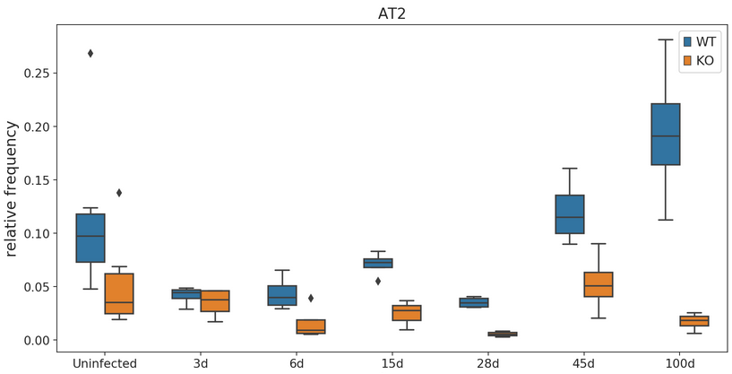
- sc_toolbox.api.plot.relative_frequencies_lineplot(relative_frequencies, order, cluster, xlabel='days', ylabel='relative frequency', hue=None, smooth=None, cols=None, title=None, rotation=None, figsize=(15, 5), tick_size=None, label_size=None, order_smooth=3, conf_int=None, scatter=None, save=None)[source]
Plot relative frequencies as a line plot.
- Parameters
relative_frequencies (pandas.core.frame.DataFrame) – Data frame containing relative Frequencies as calculated by calc_relFreq()
order – Order of x-axis labels from left to right
cluster – Which cluster to plot
xlabel (str) – x-axis label
ylabel (str) – y-axis label
hue (Optional[str]) – Value to color by
smooth (Optional[bool]) – Whether to smoothen the plot
cols – List of colors to use for line plot
title (Optional[str]) – Title of the plot
rotation (Optional[int]) – Rotation of the x-axis labels
figsize (Tuple[int, int]) – Size of the figure as specified in matplotlib
tick_size (Optional[int]) – Size of the ticks as specified in matplotlib
label_size (Optional[int]) – Size of the labels as specified in matplotlib
order_smooth (int) – If greater than 1, numpy.polyfit is used to estimate a polynomial regression
conf_int – Size of the confidence interval for the regression estimate
scatter – Set to True to add average expression values per sample ID as dots
save (Optional[str]) – Path to save the plot to
Example

- sc_toolbox.api.plot.split_boxplot(table, order, xlabel, ylabel, column=None, hue=None, cols=None, width=1, title=None, figsize=(15, 6), jitter=None, save=None)[source]
Draws a boxsplit split by hue.
- Parameters
table – Table containing the data to draw the boxplots for
order – Order of the boxplot labels
xlabel (str) – x-axis label
ylabel (str) – y-axis label
column –
hue – Value to split relative frequencies by
cols – List of colors to use for boxes
width (float) – Width of the desired plot
title – Title of the plot
figsize (Tuple[int, int]) – Size of the figure as specified in matplotlib
jitter – Set to True for individual dots per sample
save (Optional[str]) – Path to save the plot to
- sc_toolbox.api.plot.standard_lineplot(data, order, xlabel, ylabel, hue=None, gene=None, smooth=None, cols=None, title=None, rotation=None, figsize=(15, 5), tick_size=None, label_size=None, order_smooth=3, confidence_interval=None, scatter=None, save=None)[source]
Draws a standard line plot based on Seaborn’s lmplot.
- Parameters
data – Data frame containing averaged expression values
order (List) – Order of x-axis labels from left to right
xlabel (str) – x-axis label
ylabel (str) – y-axis label
hue – Subsets of the data which will be drawn on separate facets in the grid. Example: “condition”
gene – Gene of interest
smooth (Optional[bool]) – Whether to smoothen (interpolate) the curve
cols – List of colors to use for line plot
title – Title of the plot
rotation (Optional[int]) – Rotation of the x-axis labels
figsize (Tuple[int, int]) – Size of the figure as specified in matplotlib
tick_size – Size of the ticks as specified in matplotlib
label_size – Size of the labels as specified in matplotlib
order_smooth (int) – If greater than 1, numpy.polyfit is used to estimate a polynomial regression
confidence_interval – Confidence interval
scatter – Set to true in order to add mean expression per sample in form of scatter point
save (Optional[str]) – Path to save the plot to
- sc_toolbox.api.plot.volcano_plot(table, fdr_thresh=None, log_fc_thresh=0, adj_p_val='adj_p_val', log_fc='avg_logFC', gene='gene', sig_col='tab:orange', col='tab:blue', figsize=(8, 6), save=None)[source]
Scatter plot of differential gene expression results generated by diffxpy
- Parameters
table – diffxpy generated table of results
fdr_thresh (Optional[float]) – -log(FDR) threshold for labeling genes. If set to None, we will consider the 99th percentile of -log(FDR) values the threshold.
log_fc_thresh (float) – absolute(log_fc) threshold for labeling genes.
adj_p_val (str) – Label of the adjusted p value, these are considered FDRs
log_fc (str) – Label of the log fold change
gene (str) – Label of column with gene names
col (str) – Color of dots
sig_col (str) – Colour of dots surpassing defined FDR threshold
figsize (Tuple[int, int]) – Size of the figure as specified in matplotlib
save – Path to save the plot to
Example
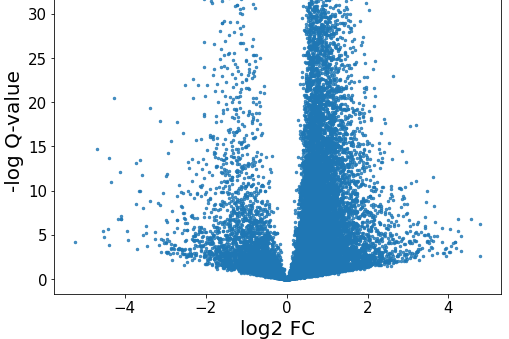
Calculations
- sc_toolbox.api.calc.add_percentages(adata, table, ids, group_by, threshold=0, gene_label='gene')[source]
Add columns to existing diffxpy table specifying percentage of expressing cells
- Parameters
adata – AnnData object containing the data
table – Table as generated by diffxpy
ids –
group_by (str) – Label to group by
threshold (int) –
gene_label (str) – Label of the genes
- Returns
Table containing percentage of expressing cells
- sc_toolbox.api.calc.automated_marker_annotation(adata, organism, tissue, marker_file, key='rank_genes_groups', normalize='reference', p_value=0.05, log_fold_change=2)[source]
Calculates a marker gene overlap based on pre-existing annotations.
Currently supported marker files:
Organism
Tissue
Marker File
Mouse
Lung
lung_particle_markers.txt
Human
NA
- Parameters
adata (anndata._core.anndata.AnnData) – AnnData object containing ranked genes
organism (str) – Currently supported: ‘mouse’
tissue (str) – Currently supported: ‘lung’
marker_file (str) – Name of the marker file to be used - refer to table
key (str) – Key of ranked genes in adata (default: ‘rank_genes_groups’)
normalize (Optional[Literal['reference', 'data']]) – Normalization option for the marker gene overlap output (default: ‘reference’)
p_value (float) – p-value threshold for existing marker genes (default: 0.05)
log_fold_change (float) – log fold change threshold for existing marker genes (default: 2)
- Returns
Pandas DataFrame of overlapping genes. Visualize with a Seaborn Heatmap
- sc_toolbox.api.calc.correlate_means_to_gene(means, corr_gene='EOMES')[source]
Calculate gene to gene correlation based on a mean expression table
- Parameters
means (pandas.core.frame.DataFrame) –
corr_gene (str) –
- Returns
Pandas DataFrame of correlations
- sc_toolbox.api.calc.correlate_to_signature(adata, marker, log_fc_threshold=0.7, cell_type='AT2 cells', cell_type_label='cell_type', log_fc_label='logfoldchange', gene_label='gene', use_raw=True)[source]
Correlations Score (based on cell type signature (logFC)) - alternative to sc.tl.score
- Parameters
adata – AnnData object containing the data
marker (pandas.core.frame.DataFrame) – Pandas DataFrame containing marker genes
log_fc_threshold (float) – Log fold change label
cell_type (str) – Cell type to calculate the correlation for
cell_type_label (str) – Label of all cell types in the AnnData object
log_fc_label (str) – Label of fold change in the AnnData object
gene_label (str) – Label of genes in the AnnData object
use_raw (bool) – Whether to use adata.raw.X
- Returns
List of correlations
- sc_toolbox.api.calc.extended_marker_table(adata, qval_thresh=0.05, cell_type_label='cell_type', gene_ranks_key='rank_genes_groups')[source]
Generates an extended marker table with cell types and percentages of expressed cell types per cluster. Run scanpy.tl.rank_genes_groups before using this function.
- Parameters
adata (anndata._core.anndata.AnnData) – AnnData object containing ranked genes
qval_thresh (float) – Threshold to filter the log fold change for
cell_type_label (str) – Label containing all cell types
gene_ranks_key (str) – Key for the ranked gene groups (generated by sc.tl.rank_genes_groups)
- Returns
A Pandas DataFrame
- sc_toolbox.api.calc.generate_count_object(adata, hue='disease', cell_type_label='cell_type', cell_type=None, min_samples=2, min_cells=5, ref='healthy', subset=None, layer='counts', outliers_removal=False)[source]
@Meshal what is this really supposed to do?
- Parameters
adata – AnnData object
hue (str) – Value to color by
cell_type_label (str) – Label containing cell types
cell_type (Optional[List[str]]) – Cells type to generate counts for
min_samples (int) – Minimum samples for outlier removal with DBScan
min_cells (int) – Minimal number of cells
ref (str) –
subset (Optional[List[str]]) –
layer (str) –
outliers_removal (bool) – Whether to remove outliers or not
- Returns
AnnData object containing counts
Example Call: subset = [‘3d PI-KO’, ‘3d PI-WT’]
- raw_counts = generate_count_object(adata,
condition = “grouping”, cell_type_label = “celltype_refined”, cell_type = [“AT2”], ref = “3d PI-WT”, subset = subset)
- sc_toolbox.api.calc.generate_expression_table(adata, cluster='all', subset_by='cell_type', xlabel='days', hue=None, use_raw=None)[source]
- Parameters
adata – Anndata object
cluster (str) – Which label of the subsets to generate the table for. Use ‘all’ if for all subsets.
subset_by (str) – Which label to subset the clusters by
xlabel (str) – x-axis
hue (Optional[str]) – Value to color by
use_raw (Optional[bool]) – Whether to use adata.raw.X for the calculations
- Returns
Gene expression table
- sc_toolbox.api.calc.generate_pseudobulk(adata, group_key='identifier', sep='\t', save=None)[source]
Generates a pseudobulk for a given key of groups in the AnnData object. Looks like:
Genes
Group Member 1
Group Member 2
Gene 1
Value 1
Value 2
Gene 2
Value 2
Value 3
- Parameters
adata (anndata._core.anndata.AnnData) – AnnData object
group_key (str) – The key to group by. E.g. by mice, by condition, … (default: ‘identifier’)
sep – Separator to use when saving the pseudobulk table (default: ‘ ‘)
save (Optional[str]) – Path to save the pseudobulk table to (default: None)
- Returns
A Pandas DataFrame containing the pseudobulk table
- Return type
pandas.core.frame.DataFrame
- sc_toolbox.api.calc.ranksums_between_groups(table, id1='bystander', id2='infected', xlabel='condition', cells=None, score='Axin2')[source]
Perform Wilcoxon Rank-sum test between two groups.
- Parameters
table –
id1 (str) –
id2 (str) –
xlabel (str) – x-axis label
cells –
score (str) –
- Returns
Pandas DataFrame containing test statistic and p-value
- sc_toolbox.api.calc.relative_frequencies(adata, group_by='cell_type', xlabel='days', condition='batch')[source]
Calculates the relative frequencies of conditions grouped by an observation.
- Parameters
adata – AnnData Objet containing the data
group_by (str) –
xlabel (str) – x-axis label
condition (str) –
- Returns
Relative frequencies in a Pandas DataFrame
- sc_toolbox.api.calc.relative_frequency_per_cluster(adata, group_by='cell_type', xlabel='days', condition=None)[source]
Calculates relative frequencies per cluster
- Parameters
adata – AnnData object containing the data
group_by (str) – The label to group by for the clusters
xlabel (str) – x-axis label
condition – condition to combine by
- Returns
Pandas DataFrame of relative frequencies
- sc_toolbox.api.calc.remove_outliers(cords, eps=1, min_samples=2)[source]
Remove outlying cells based on UMAP embeddings with DBScan (density based clustering) Call as: sub.obs[“d_cluster”] = remove_outliers(sub.obsm[“X_umap”], min_samples = 10)
- Parameters
cords – adata UMAP coordinates, typically adata.obsm[“X_umap”]
eps (int) – Maximum distance between two clusters to still be considered neighbors
min_samples (int) – Minimum samples of a cluster
- Returns
Pandas DataFrame of clusters
- sc_toolbox.api.calc.tidy_de_table(de_test, adata, cells, ids=None, qval_thresh=0.9, group_by='treatment', cols=None)[source]
Sorts diffxpy de table and adds percentages of expression per group
- Parameters
de_test – diffxpy de test
adata – AnnData object
cells –
ids –
qval_thresh (float) –
group_by (str) –
cols –
- Returns
Pandas Dataframe of diffxpy table with percentages
Utilities
- sc_toolbox.api.util.binarize_score(adata, score_label, threshold)[source]
Binarizes a provided key of an AnnData object by labeling values over a threshold as ‘positive’ or ‘negative’.
- Parameters
adata – AnnData object to perform the binarization for
score_label (str) – Label in adata.obs which will be used for the thresholding
threshold (float) – The threshold to evaluate for
- Returns
List of ‘positive’ for all scores > threshold and ‘negative’ else
- sc_toolbox.api.util.read_concatenate_to_adata(file_paths)[source]
Parses a list of file paths and concatenates them memory efficiently into a single AnnData object.
- Parameters
file_paths (List[str]) – List of file paths
- Returns
Single AnnData object containing all concatenated files
- Return type
anndata._core.anndata.AnnData
CLI
sc-toolbox
Create state of the art projects from production ready templates.
sc-toolbox [OPTIONS] COMMAND [ARGS]...
Options
- -v, --verbose
Enable verbose output (print debug statements).
- -l, --log-file <log_file>
Save a verbose log to a file.
create
Create a new project based on an existing template. Usually includes a Docker container, a Conda environment and notebooks.
sc-toolbox create [OPTIONS]
upgrade
Checks whether the locally installed version of mlf-core is the latest. If not pip will be invoked to upgrade mlf-core to the latest version.
sc-toolbox upgrade [OPTIONS]